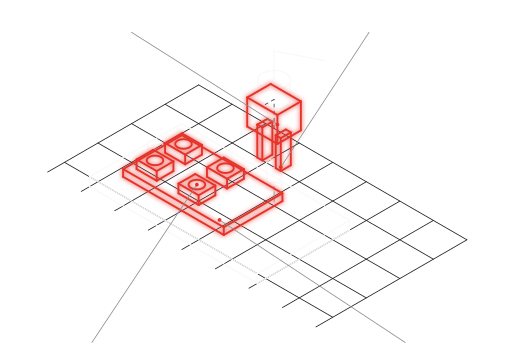

Dita di presa, nidi porta-pezzo, pallet, guide filo e fixture in PA12 sinterizzato: pezzi dedicati a ogni commessa, in lotti da 1 a 50, con canali del vuoto e sedi di sensore già nel corpo. Un terzo del peso dell'alluminio sul robot, e il ricambio identico per tutta la vita della macchina.

Vuoto, aria, sedi di sensore e riferimenti di centraggio integrati: un pezzo al posto di quattro, nessun raccordo esterno da spezzare.
La poliammide pesa un terzo dell'alluminio: meno inerzia, cicli più rapidi, robot più piccolo a parità di presa.
Il set attrezzi della commessa entra in un lotto solo, con le revisioni che il collaudo richiede: la modifica è un file, non un'altra settimana di fresa.
Dita e nidi consumati si riordinano identici dal file: tracciabilità di lotto, nessuno scaffale.
| Materiale | Processo | Perché qui | Riferimento |
|---|---|---|---|
| PA2200 (PA12) | SLS | dita, nidi, pallet: rigidità, tenacità, da −40 a +80 °C sotto carico | DPG-MAT-PA2200 |
| Nylon 12CF | FDM | bracci e staffe di EOAT dove serve rigidità estrema a peso minimo | matriceDPG-CAT §01 |
| TPU 90A | SLS | interfacce di presa cedevoli e antiscivolo; contatto pelle, non prodotto | matriceDPG-CAT §01 |
Per un costruttore di forni professionali produciamo in serie ricorrente cassetti e profili raccogligocce in PA2200: componenti a contatto con il prodotto, pareti da 2,5 mm, riordinati in lotti piccoli, lotto tracciato. Non un prototipo: una fornitura.
Le dita che stringono con forze alte e i pallet che portano carichi restano in alluminio: la PA12 non sostituisce il metallo dove serve rigidità strutturale, e ve lo diciamo sul disegno. Sotto la scala delle macchine da tavolo, il pezzo ve lo fate in casa e fate bene.